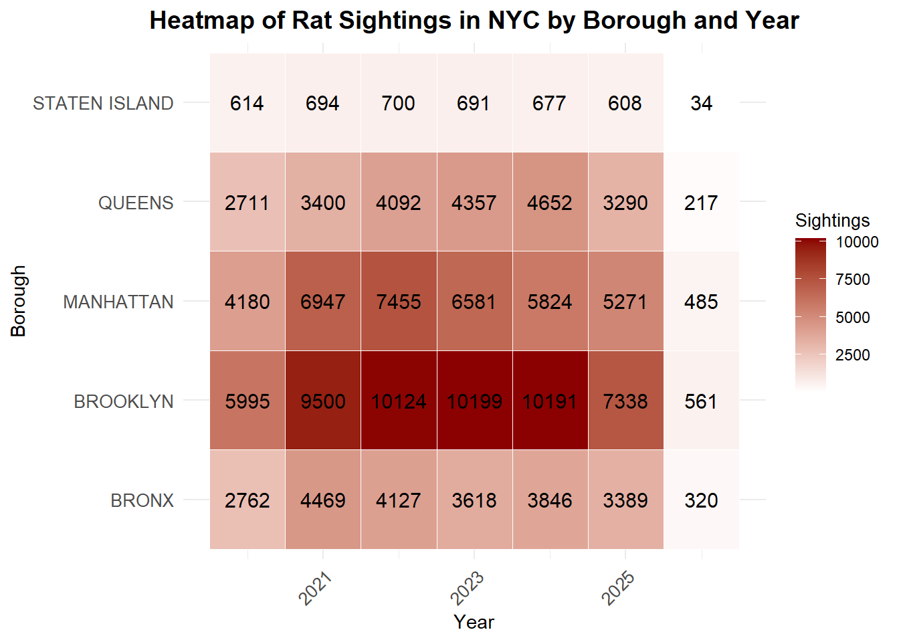
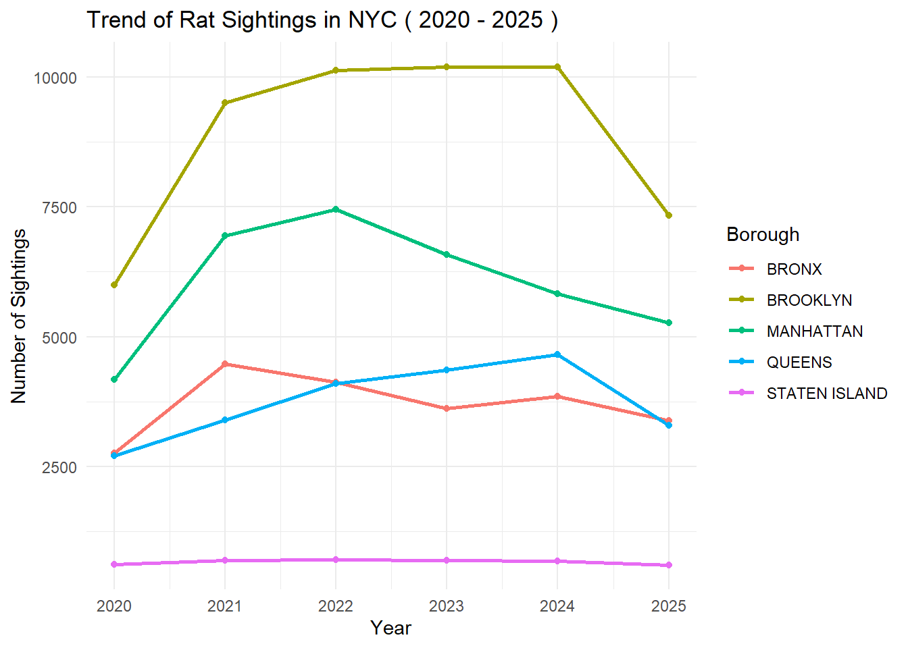
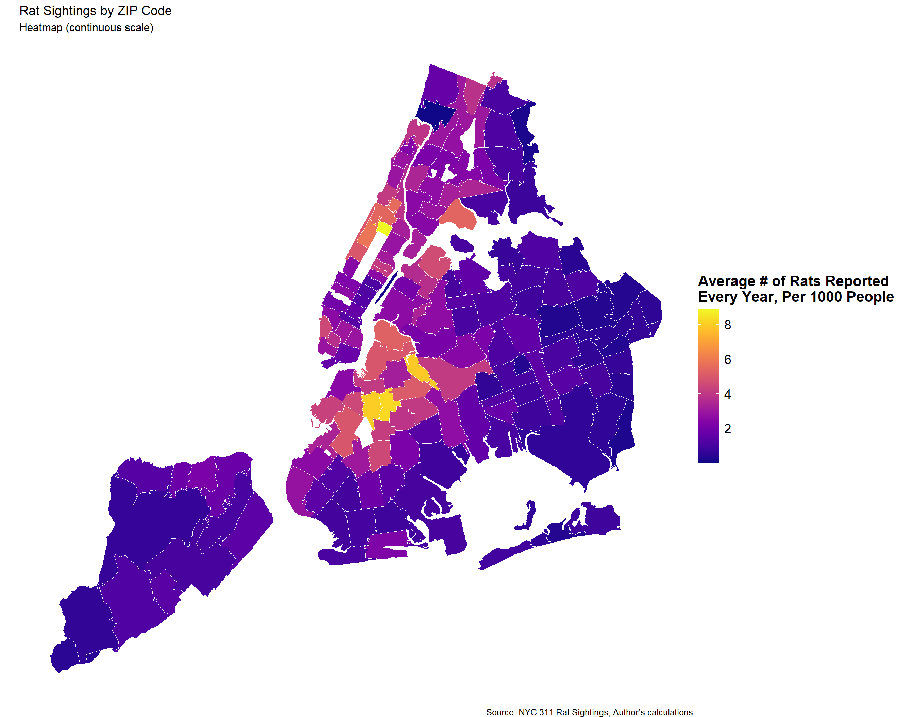
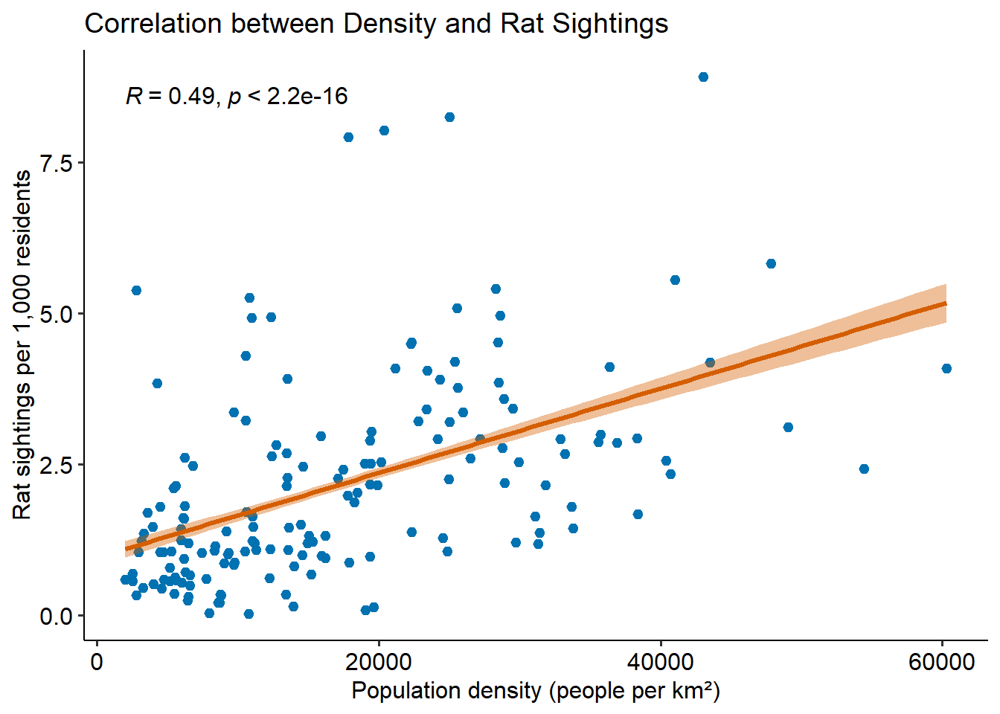
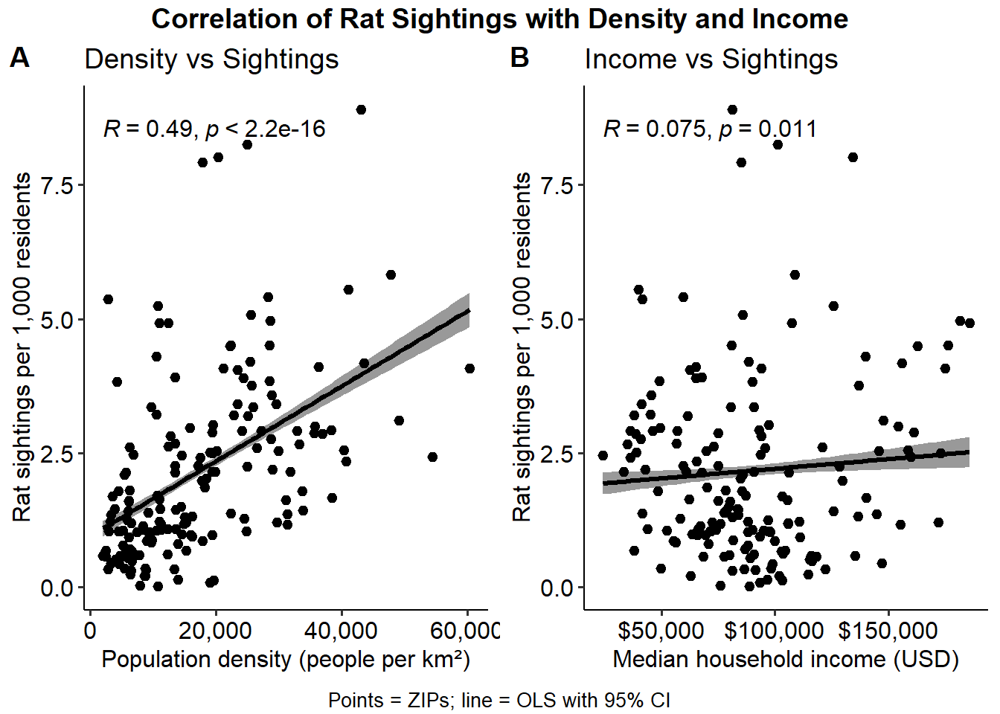

Urban Density And Rat Sightings: Evidence from New York City Zip Codes
Author
John Scheble
Which New York City neighborhoods have a rat problem, and why? Using 311 complaint data linked to Census population and income figures, this report constructs density-adjusted sighting rates across ZIP codes to answer that question fairly, controlling for the fact that denser neighborhoods will always generate more raw complaints.
Findings at a Glance
NYC rat complaint data from 311 reports reveals a clear relationship between urban density and rat sightings across the city’s ZIP codes. Brooklyn and Manhattan consistently logged the highest complaint volumes over the study period, while Staten Island remained relatively low throughout. Adjusting for population, denser ZIP codes report meaningfully more rat sightings per capita. The relationship between density and sightings produced a moderate positive correlation (R = 0.45) that holds even after controlling for borough-level differences. By contrast, median household income showed no statistically significant relationship with sighting rates, suggesting that density, not wealth, is the primary driver of rat complaints at the ZIP code level.
Data Processing & Cleaning
Data Origins
The data from this report comes from a few different locations.
311 Rat Sightings (rats_raw, rats_clean) - https://data.cityofnewyork.us/Social-Services/Rat-Sightings/3q43-55fe/about_data
This data can be found on NYC Open Data, directly from the NYC Office of Technology and Innovation (OTI). This dataset notes all rat sightings with descriptive details.
Zip Code Shapefile (Zip_code_raw) - https://data.cityofnewyork.us/Health/Modified-Zip-Code-Tabulation-Areas-MODZCTA-/pri4-ifjk/about_data
This data can also be found on NYC Open Data, allowing us to correctly map the boundaries of New York City’s Zip codes.
Income data (income) - https://censusreporter.org/data/table/?table=B19013&geo_ids=860|16000US3651000&primary_geo_id=16000US3651000
This is Median Household Income in the Past 12 Months (In 2024 Inflation-adjusted Dollars) for all zip codes in New York, NY. Data sourced by Census Reporter.
Population Data (pop) - https://censusreporter.org/data/table/?table=B01003&geo_ids=860|16000US3651000&primary_geo_id=16000US3651000#
This is Total Population for all zip codes in New York, NY. Data sourced by Census Reporter.
# Connect to in-memory SQLite databasecon <-dbConnect(RSQLite::SQLite(), ":memory:")# Load raw data into SQLite as tablesdbWriteTable(con, "rat_sightings", rats_clean)dbWriteTable(con, "income", income)dbWriteTable(con, "population", pop)# Read, clean and split the .sql file into individual queriessql_lines <-readLines("queries.sql")sql_lines <- sql_lines[!grepl("^\\s*--", sql_lines)]sql_text <-paste(sql_lines, collapse ="\n")sql_queries <-strsplit(sql_text, ";")[[1]]sql_queries <-trimws(sql_queries)sql_queries <- sql_queries[nchar(sql_queries) >0]# Execute each query and assign to named variablesrats_summary <-dbGetQuery(con, sql_queries[[1]]) # borough/year aggregationrat_yearly <-dbGetQuery(con, sql_queries[[2]]) # ZIP/year/borough aggregationfull_dataset <-dbGetQuery(con, sql_queries[[3]]) # joined ZIP summarydbDisconnect(con)
# Heatmapggplot(rats_summary, aes(x = Year, y = borough, fill = Sightings)) +geom_tile(color ="white") +geom_text(aes(label = Sightings), color ="black", size =4) +scale_fill_gradient(low ="white", high ="darkred") +theme_minimal() +labs(title ="Heatmap of Rat Sightings in NYC by Borough and Year",x ="Year",y ="Borough",fill ="Sightings") +theme(plot.title =element_text(hjust =0.5, face ="bold", size =14),axis.text.x =element_text(angle =45, hjust =1, size =10),axis.text.y =element_text(size =10),legend.title =element_text(size =10),legend.text =element_text(size =9))

The heatmap shows the following:
Brooklyn and Manhattan have the most rat sightings.
There were major increases in rat reports during 2015-2017 throughout several boroughs.
Queens and Staten Island have fewer rat sightings overall.
Based on this, we can say that pest control teams should concentrate their efforts in the boroughs with the highest number of rats, mainly Brooklyn and Manhattan.
Rat Sightings Per Borough Over Time
Code
# Line plotggplot(rats_summary %>%filter(Year <2026), aes(x = Year, y = Sightings, color = borough)) +geom_line(linewidth =1) +geom_point() +theme_minimal() +labs(title =paste("Trend of Rat Sightings in NYC (", min(rats_summary$Year), "-", max(rats_summary$Year[rats_summary$Year <2026]), ")"),x ="Year",y ="Number of Sightings",color ="Borough")

The above graph illustrates the large and steady quantity difference in rat sightings between boroughs over time. We see that Brooklyn has consistently had the largest number of rat sightings for each year recorded, followed by Manhattan, Bronx, Queens and Staten Island respectively. Over time, there hasn’t been much change in this order, with Queens and the Bronx close for 3rd place.
Choropleth Map of Sightings
Code
#Create heatmap with zip plottingif (!inherits(full_dataset_sf, "sf")) { full_dataset_sf <-st_as_sf(full_dataset_sf, wkt ="the_geom", crs =4326)}full_dataset_sf_plot <-st_transform(full_dataset_sf, 3857)metric <-"Sightings_per_1000_per_Year"p_cont <-ggplot(full_dataset_sf_plot) +geom_sf(aes(fill = .data[[metric]]), color ="white", linewidth =0.2) +scale_fill_viridis(option ="C", direction =1,na.value ="grey90",name =label_wrap(30)("Average # of Rats Reported Every Year, Per 1000 People") ) +labs(title ="Rat Sightings by ZIP Code",subtitle ="Heatmap (continuous scale)",caption ="Source: NYC 311 Rat Sightings; Author’s calculations" ) +theme_void(base_size =12) +theme(legend.position ="right",legend.title =element_text(size =16, face ="bold"),legend.text =element_text(size =14) ) +guides(fill =guide_colorbar(title.position ="top",barheight =unit(6, "cm"),barwidth =unit(0.8, "cm")))
Code
p_cont

Rat sightings per 1,000 residents by ZIP
The above heat map illustrates exactly where rat sightings are in the 5 boroughs. It is calculated by averaging total rat calls by the 5 years the data was collected, then adjusting per 1000 people in order to standardize for population.
Regression Model Results
Code
dat <- full_dataset_sf |>st_drop_geometry() |>mutate(pop_density_k = pop_density_sqkm /1000, # per 1,000 people/km²Median_Income = Median_Income, borough =fct_relevel(borough, "BRONX") # pick your reference explicitly )m0 <-lm(Sightings_per_1000_per_Year ~ Median_Income + pop_density_k, data = dat)mFE <-lm(Sightings_per_1000_per_Year ~ Median_Income + pop_density_k + borough, data = dat)modelsummary(list("Baseline"= m0, "Borough FE"= mFE),vcov ="HC3", # robust SEsstatistic ="({std.error})",stars =TRUE,coef_map =c("(Intercept)"="Intercept","Median_Income"="Median income (per $1k)","pop_density_k"="Pop. density (per 1k/km²)" ),gof_map =c("nobs","r.squared","adj.r.squared","AIC","BIC","rmse"),output ="markdown")
Baseline
Borough FE
+ p < 0.1, * p < 0.05, ** p < 0.01, *** p < 0.001
Intercept
0.861*
0.840
(0.357)
(0.528)
Median income (per $1k)
0.000
0.000
(0.000)
(0.000)
Pop. density (per 1k/km²)
0.068***
0.062***
(0.011)
(0.017)
Num.Obs.
171
171
R2
0.227
0.309
R2 Adj.
0.218
0.284
RMSE
1.48
1.40
The regression results confirm that population density is positively associated with rat complaint rates. In the baseline model, a 1,000 person/km² increase in density predicts +0.068 additional sightings per 1,000 residents per year (p < 0.001). Adding borough fixed effects slightly reduces this to 0.062 (p < 0.001), suggesting the density effect is robust even after accounting for borough-level differences. Median income is indistinguishable from zero across both model specifications and is not statistically significant. Adding borough indicators improved model fit from R² = 0.227 to 0.309. Estimates are descriptive rather than causal.
#Correlation scatterplotggscatter( rats_with_density,x ="pop_density_sqkm",y ="Sightings_per_1000_per_Year",add ="reg.line",conf.int =TRUE,color ="#0072B2", add.params =list(color ="#D55E00", linewidth =1.1),xlab ="Population density (people per km²)",ylab ="Rat sightings per 1,000 residents",title ="Correlation between Density and Rat Sightings") +stat_cor(method ="pearson", label.x.npc ="left", label.y.npc ="top") +theme_pubr(base_size =12) +theme(legend.position ="none")

Denser ZIP codes report more rat sightings per capita. The relationship is moderate and positive (R = 0.45), consistent with the fitted line and confidence band. Dispersion widens at higher densities, so effects are not uniform across neighborhoods.
Correlation of Sightings with Density vs Income
Code
#1st plot density vs sightingsp_density <-ggscatter( rats_with_density,x ="pop_density_sqkm",y ="Sightings_per_1000_per_Year",add ="reg.line",conf.int =TRUE,xlab ="Population density (people per km²)",ylab ="Rat sightings per 1,000 residents",title ="Density vs Sightings") +stat_cor(method ="pearson", label.x.npc ="left", label.y.npc ="top") +scale_x_continuous(labels =label_comma()) +theme_pubr(base_size =12) +theme(legend.position ="none")#2nd plot Income vs Sightingsp_income <-ggscatter( rats_with_density,x ="Median_Income",y ="Sightings_per_1000_per_Year",add ="reg.line",conf.int =TRUE,xlab ="Median household income (USD)",ylab ="Rat sightings per 1,000 residents",title ="Income vs Sightings") +stat_cor(method ="pearson", label.x.npc ="left", label.y.npc ="top") +scale_x_continuous(labels =label_dollar(accuracy =1)) +theme_pubr(base_size =12) +theme(legend.position ="none")# Side by Side for dramatic effectpaired <-ggarrange( p_density, p_income,ncol =2, nrow =1,labels =c("A", "B"),align ="hv")annotate_figure( paired,top =text_grob("Correlation of Rat Sightings with Density and Income",face ="bold", size =14),bottom =text_grob("Points = ZIPs; line = OLS with 95% CI", size =10))

Panel A shows a clear, positive association: denser ZIPs tend to report more rat sightings per capita. The spread widens at higher densities (fan shape), so variance is larger in dense areas—reason to use robust SEs in regressions. Panel B is essentially flat: income is not correlated with sightings in these data (R ≈ 0, p ≈ 0.99). Any relationship between income and complaints is either negligible or swamped by other factors like density, building stock, or reporting behavior.
This map highlights where sightings are unusually high or low after accounting for density. Dark purples represent ZIPs that have larger than expected complaint rates given how dense they are, while oranges mark places that report less than expected. Clustering suggests localized conditions like building stock, sanitation practices, enforcement, or reporting behavior influence sightings instead of density alone.
Conclusions
Population density is the strongest predictor of rat complaint rates across NYC ZIP codes. A regression model controlling for borough fixed effects finds that each 1,000 person/km² increase in density is associated with approximately 0.062 additional sightings per 1,000 residents per year. Controlling for borough provided additional variation beyond density alone. This points to localized factors such as building stock, sanitation infrastructure, and reporting behavior that density alone cannot capture. Median income adds no explanatory power across either model specification.
These results suggest pest control resources would be most efficiently directed toward high-density neighborhoods in Brooklyn and Manhattan. However, the residual map highlights that certain ZIP codes report far more or fewer sightings than their density would predict. This would suggest targeted local investigations are warranted instead of broad density-based allocation. Results should be interpreted as descriptive rather than causal.